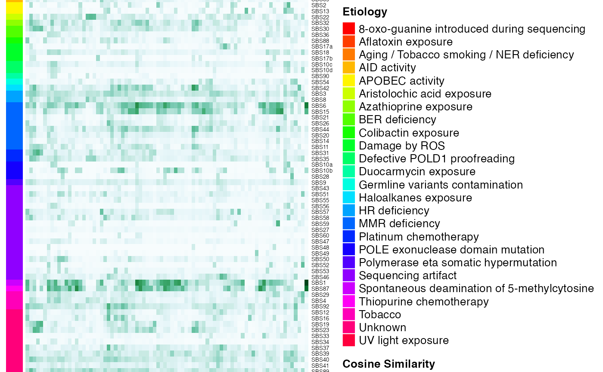

R/generateCOSMICSignaturePlot.R
generateCOSMICMutSigSimHeatmap.RdThis function computes and plot the cosine similarity of each individual signature is computed against each COSMIC signature from COMIC V3.2. The cosine similarity is a value between 0 (distinct) and 1 (identical) and indicates how much two vectors are alike.
generateCOSMICMutSigSimHeatmap(
mymaf,
use_silent_mutations = FALSE,
full_output = FALSE,
show_broad_categories = TRUE,
clin_data = NULL,
clin_data_colors = NULL,
add_sample_names = NULL,
savename = NULL,
fig_height = NULL,
fig_width = NULL
)mutation count matrix (dimensions: a mutation features X n samples)
96 mutation count matrix (dimensions: a mutation features X m samples)
return full output including the etiology matrix and plot data
To show broad etiology categories
Clinical data to be plotted in the heatmap
Clinical data colors
Whether or not to add column labels; if set to NULL, will add labels only if # samples less than 10
file name of the plot
Output height (inches); set to NULL to size automatically; only used if savename is set.
Output width (inches); set to NULL to size automatically; only used if savename is set.
Complex Heatmap object. If full_output is TRUE it will consist of a list including heatmap object, etiology matrix and plot data.
library(MAFDash)
library(maftools)
library(ComplexHeatmap)
#> Loading required package: grid
#> ========================================
#> ComplexHeatmap version 2.6.2
#> Bioconductor page: http://bioconductor.org/packages/ComplexHeatmap/
#> Github page: https://github.com/jokergoo/ComplexHeatmap
#> Documentation: http://jokergoo.github.io/ComplexHeatmap-reference
#>
#> If you use it in published research, please cite:
#> Gu, Z. Complex heatmaps reveal patterns and correlations in multidimensional
#> genomic data. Bioinformatics 2016.
#>
#> This message can be suppressed by:
#> suppressPackageStartupMessages(library(ComplexHeatmap))
#> ========================================
maf <- system.file("extdata", "test.mutect2.maf.gz", package = "MAFDash")
val<-generateCOSMICMutSigSimHeatmap(read.maf(maf));draw(val)
#> -Reading
#> -Validating
#> -Silent variants: 561
#> -Summarizing
#> --Possible FLAGS among top ten genes:
#> MACF1
#> MUC16
#> -Processing clinical data
#> --Missing clinical data
#> -Finished in 0.244s elapsed (0.220s cpu)
#>
#> Attaching package: ‘BiocGenerics’
#> The following objects are masked from ‘package:parallel’:
#>
#> clusterApply, clusterApplyLB, clusterCall, clusterEvalQ,
#> clusterExport, clusterMap, parApply, parCapply, parLapply,
#> parLapplyLB, parRapply, parSapply, parSapplyLB
#> The following objects are masked from ‘package:stats’:
#>
#> IQR, mad, sd, var, xtabs
#> The following objects are masked from ‘package:base’:
#>
#> Filter, Find, Map, Position, Reduce, anyDuplicated, append,
#> as.data.frame, basename, cbind, colnames, dirname, do.call,
#> duplicated, eval, evalq, get, grep, grepl, intersect, is.unsorted,
#> lapply, mapply, match, mget, order, paste, pmax, pmax.int, pmin,
#> pmin.int, rank, rbind, rownames, sapply, setdiff, sort, table,
#> tapply, union, unique, unsplit, which.max, which.min
#>
#> Attaching package: ‘S4Vectors’
#> The following object is masked from ‘package:base’:
#>
#> expand.grid
#>
#> Attaching package: ‘Biostrings’
#> The following object is masked from ‘package:base’:
#>
#> strsplit
#> -Extracting 5' and 3' adjacent bases
#> -Extracting +/- 20bp around mutated bases for background C>T estimation
#> -Estimating APOBEC enrichment scores
#> --Performing one-way Fisher's test for APOBEC enrichment
#> ---APOBEC related mutations are enriched in 12.658 % of samples (APOBEC enrichment score > 2 ; 10 of 79 samples)
#> -Creating mutation matrix
#> --matrix of dimension 80x96
